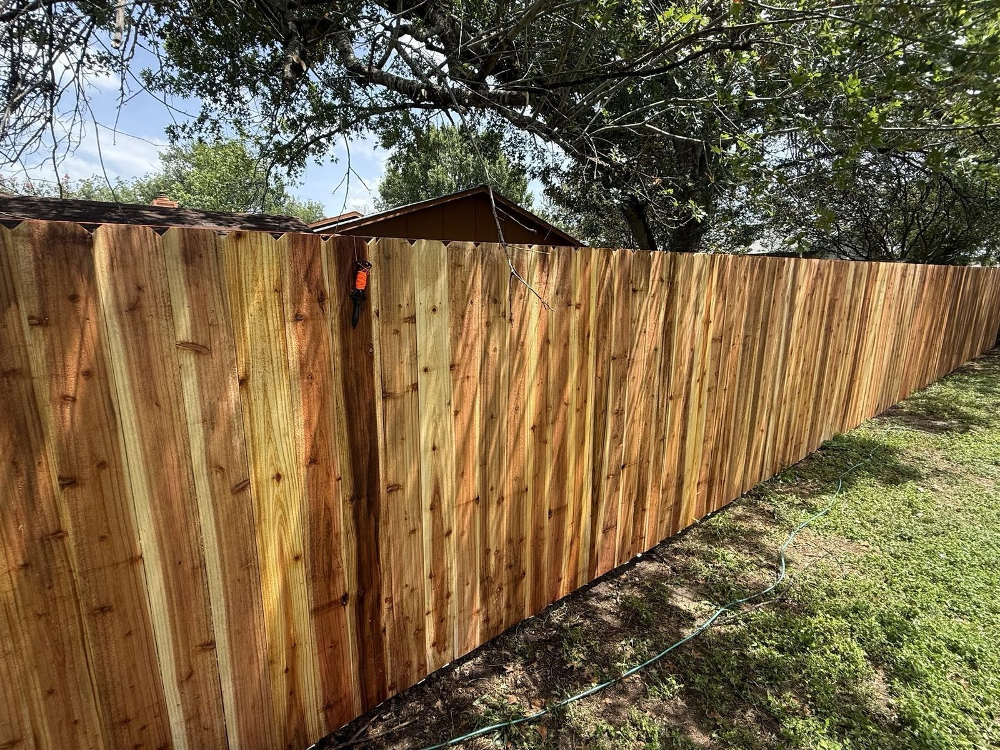
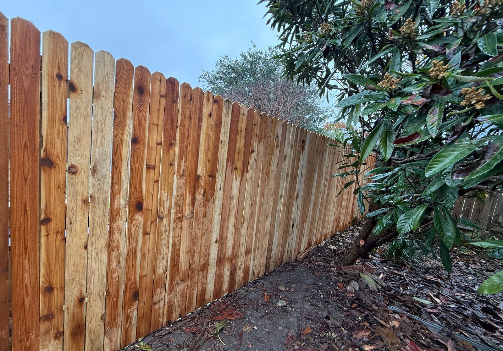
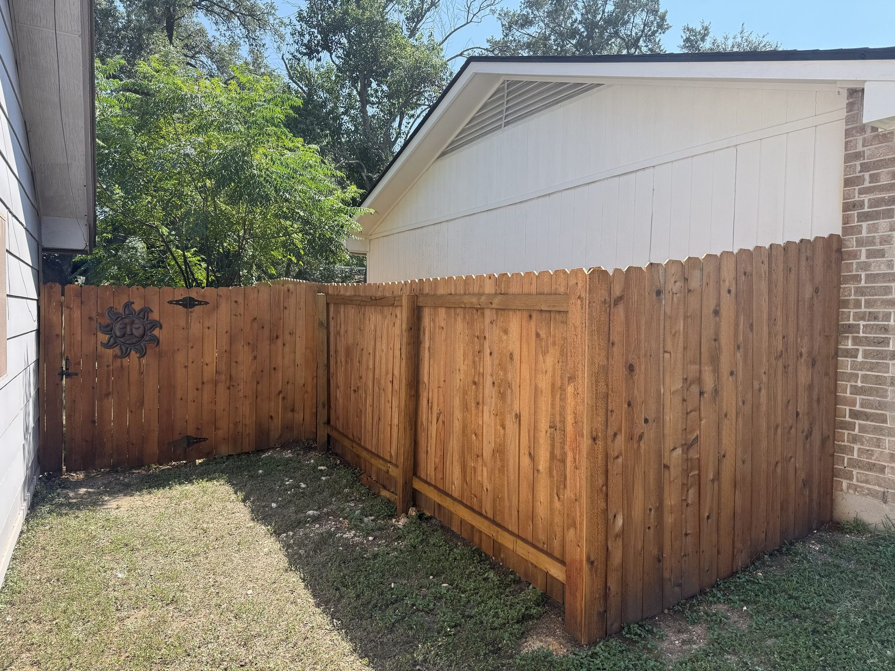

Stain too early and it sits on top of wet wood and peels. Wait too long and the Texas sun has already grayed and checked the boards, so you are paying to clean and brighten before you can stain. Timing is most of what makes a stain job last.
Here is when to stain a new fence or deck in the Austin area, how to tell when the wood is ready, the best months to do it, how often to recoat, and what fence staining costs in 2026.
When to stain a new cedar fence
Stain a new cedar fence about 4 to 8 weeks after it goes in. Fresh cedar holds moisture from the mill, and stain needs dry wood to soak in instead of sitting on the surface. Waiting a few weeks also lets the surface open up a little, so the stain absorbs evenly.
Do not wait much longer than a couple of months, especially in summer. Raw cedar in Austin sun starts turning gray within months, and once it does, the fence needs a cleaning and brightening step before stain will look right.

When to stain a new pressure-treated deck or fence
New pressure-treated pine usually needs longer to dry than cedar, because it is treated with a water-based preservative and often arrives wet. Depending on the weather, that can mean several weeks to a few months before it is ready. Lumber sold as kiln-dried after treatment can usually be stained much sooner.
Do not go by the calendar alone. Use the water test below.
The water test: is the wood ready?
Sprinkle a little water on the boards in a few spots, including one in the shade. If the water beads up and sits there, the wood is still too wet or too sealed, so wait and test again in a week or two. If the water soaks in within a few minutes, the wood is ready to stain.
The same test tells you when an old deck or fence needs a new coat: when water stops beading and soaks right in, the old finish has worn through.
The best months to stain in Austin
The best times to stain in Austin are fall, October and November, and spring, March and April. Those months bring mild temperatures, lower humidity and fewer storms. Stain wants a dry stretch: no rain for a day or two before and after, and temperatures inside the range printed on the can.
Summer is doable but harder. In 100-degree sun, stain dries too fast and can leave lap marks, so it is best done in the morning or on the shaded side first. Winter works on mild, dry days, but not when a freeze is on the way. Our Austin build season guide covers how the seasons affect every outdoor project.
| Season | Staining conditions in Austin |
|---|---|
| Fall (Oct to Nov) | The best window: mild, drier, fewer storms |
| Winter (Dec to Feb) | Workable on mild, dry days; skip cold snaps |
| Spring (Mar to Apr) | Good early; watch for storm weeks |
| Summer (May to Sep) | Hardest: stain early in the day and out of direct sun |

How often to restain a deck or fence in Texas
Plan on restaining a wood deck every 2 to 3 years and a fence with semi-transparent stain every 3 to 5 years. Decks wear faster because they take foot traffic and sun on flat boards, while a fence only takes sun and rain on its faces.
- Clear sealer. Lets the wood age naturally and slows it down. Needs recoating most often.
- Semi-transparent stain. Shows the grain and holds color. A common choice for cedar fences and wood decks around Austin.
- Solid stain. Covers like paint and lasts the longest between coats, but hides the grain and can peel on deck boards that get a lot of traffic.
Signs it is time: water soaks in instead of beading, the color has faded or turned gray, or the boards feel rough and start to splinter. South- and west-facing runs usually need it first.
Oil-based or water-based stain?
Both work in Austin, and the right one depends on the wood and what is already on it. Oil-based stains soak deeper into dry, weathered wood and tend to bring out the grain, which suits cedar and older fences. They take longer to dry and clean up with mineral spirits.
Water-based stains dry faster, have less odor, clean up with water and hold their color well in strong sun. They are a good fit for newer wood and for recoating over a water-based finish. Whichever you pick, stay with the same type when you recoat, or strip the old finish first, because one type often will not bond well over the other.
Color matters too. In full Texas sun, medium cedar and brown tones hide fading and dirt better than very light or very dark colors, and they usually look more even as they weather between coats.
Prep matters more than the stain
A stain job is only as good as the surface under it. Old dirt, mildew and gray, sun-damaged fibers keep stain from bonding, so the wood needs a proper cleaning first and time to dry before the first coat. On an older fence or deck, a wood brightener helps the new color come out even.
Before staining, it is also the right time to fix what is loose. Replace split pickets or boards, reset a leaning post, and drive down raised nails or screws. Staining over a problem only makes it harder to fix later. Our fence repair cost guide and deck repair cost guide cover the most common fixes.
Fence or deck looking gray? Send a photo and the rough length or size. John will tell you if it needs a clean and stain or a repair first, and send a line-itemed quote, free.
Get a staining quoteWhat fence staining costs in Austin
Restaining a fence in Austin costs about $3 to $7 per linear foot, per side, in 2026. The spread comes from the fence height and style, how weathered the wood is, how much cleaning and prep it needs, and whether both sides are stained.
| Fence length | One side | Both sides |
|---|---|---|
| 100 ft | $300 to $700 | $600 to $1,400 |
| 150 ft | $450 to $1,050 | $900 to $2,100 |
| 200 ft | $600 to $1,400 | $1,200 to $2,800 |
Deck staining depends on the size, the railing and stairs, and how much the boards need cleaning or repair, so we price it after seeing the deck. Ask for staining as its own line item on any quote so you can compare it.

Check your HOA before you pick a color
Many Austin-area HOAs control fence and deck stain colors, and some only allow natural cedar tones on the street-facing side. Check your CCRs or your HOA's approved color list before you buy stain, and submit the color for review if your HOA requires it. Our HOA approval guide explains how that process works.
What about composite decks?
Composite and PVC decking never need stain or sealer. A wash a couple of times a year keeps them clean. If you are tired of restaining a wood deck, our composite decking comparison explains the options and what they cost.
Staining it yourself vs hiring it out
A small, newer fence in good shape is a reasonable weekend project if you have a sprayer or a roller and a few dry days. If you do it yourself, cover plants and anything nearby that overspray could reach, work top to bottom in sections, and back-brush sprayed stain so it soaks in evenly instead of running. Try your color on a hidden board first, because stain often looks different on your wood than on the sample. Hiring it out makes more sense for long fence runs, two-sided staining, a deck with railings and stairs, or wood that needs cleaning and repairs first. We clean, make small repairs and stain fences and decks across greater Austin. See our Austin fence page and Austin deck page for recent work.
Staining questions, answered
How long should I wait to stain a new cedar fence?
About 4 to 8 weeks after install. That gives the fresh cedar time to dry so the stain soaks in instead of sitting on the surface. Do not wait much longer than a couple of months, or the sun will start to gray the wood.
How long should I wait to stain a new pressure-treated deck?
Usually several weeks to a few months, depending on the weather, because new pressure-treated pine is often still wet from treatment. Use the water test: when water soaks in instead of beading up, the wood is ready.
What is the best time of year to stain a fence in Austin?
Fall, in October and November, and spring, in March and April. Those months bring mild temperatures, lower humidity and fewer storms. In summer, stain early in the day and out of direct sun.
How often should I restain my deck in Texas?
Plan on every 2 to 3 years for a wood deck in Austin sun. Fences with semi-transparent stain usually go 3 to 5 years, because they do not take foot traffic.
How do I know when my fence or deck needs stain?
Sprinkle water on it. If the water soaks in instead of beading up, the old finish has worn through. Fading, graying and rough or splintering boards are other signs.
How much does it cost to stain a fence in Austin?
About $3 to $7 per linear foot, per side, in 2026. A 150-foot fence runs about $450 to $1,050 for one side or $900 to $2,100 for both sides, depending on height, style and how much prep the wood needs.
Should I use semi-transparent or solid stain?
Semi-transparent stain shows the grain and is a common choice for cedar fences and wood decks. Solid stain lasts longer between coats and hides the grain, but it can peel on deck boards that get a lot of foot traffic.
Do composite decks need to be stained?
No. Composite and PVC decking never need stain or sealer. Washing them a couple of times a year keeps them clean.
Prices on this page come from our own 2026 Austin-area quotes. Rules change, so we check which ones apply to your address before every build. New to a term? See our plain-English glossary.